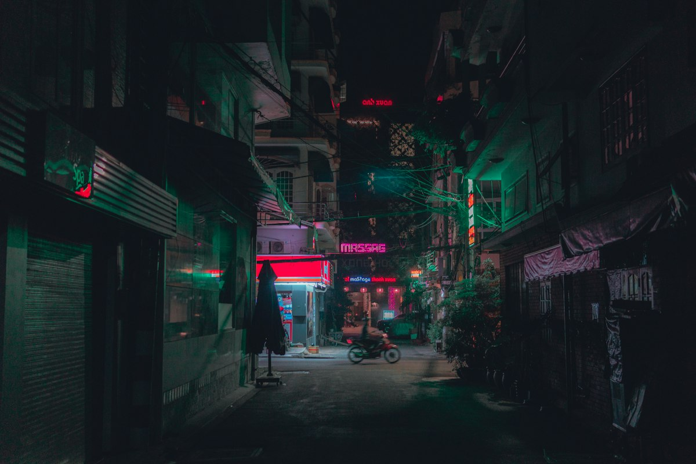

Blade Runner 2099 Swaps Who Holds the Clipboard
Amazon's eight-episode return keeps the franchise's question about personhood and moves the pressure to the side of the desk that now gives the orders.

A series that refuses to explain itself
Streaming shows lately explain themselves twice, as if assuming the viewer arrived from another room. Amazon's Blade Runner 2099 does not, and that refusal is the argument. The series arrives on Prime Video on November 25th, eight episodes long, and it moves at the pace of the films before it. Its real invention is structural rather than plot-driven. The franchise spent two features asking whether a manufactured person could count as human. This one stops asking and looks at who gives the orders now.
The claim is small and testable. A reversal of who holds the badge is not automatically a new idea. A show can flip a premise and still deliver the comfort its audience already agreed with. What decides the difference is whether the new order has an aesthetic, a routine and a cost. On the account published by The Verge, written by entertainment editor Andrew Webster, it has all three, which is the season's real claim on your time.
What the flip does to the premise
The premise is stated plainly in the review. The show sits 50 years after the last film, and between those two dates humans and replicants fought a war and the replicants won. Humans are now cataloged and sent to manual work. The blade runners of the title are replicants hunting the humans who resist that arrangement.
Two partners carry it. Olwen, played by Michelle Yeoh, is a replicant with about a week left to live who spends it looking for a former partner gone missing. Cora, played by Hunter Schafer, is a human passing as a replicant. She is trying to win freedom for herself and a sick brother. The gap between what they risk is the engine of the pair: one is out of time and knows it, and the other is spending borrowed time.
The disguise is the interesting half
Webster's best observation is about how the cover works. Humans in this era have longer lives and an actual childhood, while replicants are grown in a lab and arrive as full-grown adults. You would expect the second group to be the thinner one. Instead the humans have learned to keep their faces empty, which is what a replicant is supposed to look like. Cora passes because hardship did the work biology was supposed to do.
That reading gives the reversal something a slogan version would not have. Swapping the species that wears the uniform would be cheap if it only produced a new roster of villains. It earns its place when it changes what evidence counts, and when interiority becomes a matter of performance rather than of origin. This account says the show is interested in the second problem.
Where eight episodes costs the show
The criticism is a length criticism, and the review does not dress it up. The middle episodes sag with storylines nobody needed and characters nobody finished. Amy Lennox's replicant is called lively and then called flat, which is the same performance in two clauses. A slow burn holds a feature; stretched across eight episodes it shows its seams.
The added action has the same problem. The series is more physical than the films, and the fights sit badly against the rest of it. The Voight-Kampff standoffs are the clearest case. Webster likes them, and the image of two people waiting for the other to blink is a good one, but they return often enough to lose their charge. That is not a flaw of writing.
The fix is shorter.
Read together, the two complaints turn into one. The show has built a world with more room than its plot can fill, and it spends the extra room on second ideas.
The rooms the films never opened
What the length does buy is the world. Webster describes parlors where a replicant can rent another life inside a convincing bodysuit, and basement dance clubs where humans get loud out of replicant sight. The war is never shown, only its aftermath. A Mexico City that has stayed human exists as a rumor the characters pass along.
The look carries the same argument. Chunky machines, hard concrete, architecture built to intimidate, and jackets the reviewer is right to like. None of it arrives with an explanation attached, and the refusal to explain is the style the franchise was bought for.
What this page cannot say
This page has not watched the season. The verdict quoted above belongs to one reviewer working from screeners, and a review is an argument rather than a report. Two questions stay open until the show is in front of a viewer. Does the reversal hold its meaning in the last episodes, or does the plot device spend it? And does the blankness of the human characters read as oppression or as thin writing?
There is a second gap in the record. The review does not name the directors or the person who runs the show, so nothing here can connect the season's choices to a specific hand behind them. That is missing evidence rather than a missing quality. A viewer deciding whether to start the season is deciding on the strength of one reviewer's patience. The staff list will have to be looked up elsewhere.
The part worth defending
The strongest case for the season is the one the review makes last, almost as an aside. It ends. Franchise television is usually built to be continued. This one has a final ending, and it opens a question and leaves it open rather than promising another run to answer it. A studio willing to close a story on purpose is rare, and that closing is worth more than one extra plotline in the middle.
The reversal also earns its keep in a way a straight retelling would not. Blade Runner has always been about legibility: who can be read as a person by an office, a machine or a test. Changing the species holding the clipboard keeps the question and moves the pressure. The audience is asked to see the queue from the other side of the desk. That is an honest inheritance rather than a reboot trick.
Two days separate the review from the audience, and until those days are spent the useful thing here is the shape of the complaint. A season too long for its middle and too short for its world is a season that needs cutting, not retooling.